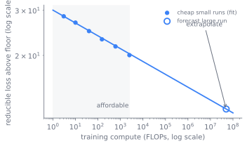
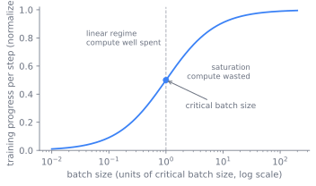

3 Scaling Laws and Compute Allocation
Pre-training is the bulk compute spend: take a fixed architecture and a fixed data mixture and turn FLOPs into a base model by minimizing a next-token loss. This chapter owns the recipe of that spend, the objective, the optimizer, the schedule, the batch size, and above all the scaling laws that decide how big a model to train on how many tokens before you pay for the run. By the end a reader can explain why a frontier model is the size it is, trained on the number of tokens it is, and why that answer changed between 2020 and today.
3.1 The irreversible bet
A pre-training run commits a cluster for weeks and a budget you cannot refund. Before it starts you must choose a parameter count, a token budget, a learning-rate schedule, and a batch size, and you must choose them from small experiments because you cannot afford to try them at full scale. The whole chapter is one question asked under that constraint: how to spend a fixed compute budget so the final loss is as low as it can be, and how to know that before committing.
The reason the question is answerable at all is that the spend has a predictable shape. The autoregressive objective is what makes it both possible and measurable. Next-token prediction is maximum likelihood over a token stream, cross-entropy on the shifted sequence under a causal mask, so every position is a training example and the corpus is its own supervision. The loss this produces, in nats or bits per token, is the quantity scaling laws predict; perplexity is just its exponential. That single scalar, the loss, is what you are buying with the run, and it is what the rest of the chapter learns to forecast and then to minimize per dollar.
3.2 A law you can extrapolate
The decision that dominates everything else is sizing, and sizing is tractable because the loss is smooth. A scaling law fit on a ladder of small runs predicts the loss of a large run as a power law in parameters, data, and compute (Kaplan et al. 2020):
\[ L(N, D) = E + \frac{A}{N^{\alpha}} + \frac{B}{D^{\beta}} \]
where \(N\) is parameters and \(D\) is training tokens. You fit the constants on runs you can afford, then read off the compute-optimal \(N\) and \(D\) for the budget you intend to spend. The law extrapolates: that is its entire value. It lets a few cheap runs stand in for a run you will only ever do once. Because the loss is a power law in compute, those cheap runs fall on a straight line in log-log coordinates, and the line predicts the loss of the expensive run far to the right, as Figure fig-03-scaling-laws-1 sketches.

The same logic extends to the hyperparameters that the loss formula does not name. Maximal-update parametrization (muP) makes them transfer: parametrize the widths so the optimal learning rate and initialization are stable across model size, tune them on a small proxy, and carry them to full scale instead of sweeping at full cost (Yang et al. 2022). Sizing and hyperparameters both become things you decide on small runs and trust at large ones.
3.3 Kaplan, then Chinchilla
The sizing rule itself has a history, and getting it wrong is the most expensive mistake in this chapter. Kaplan et al. (2020) established that loss follows smooth power laws and, from their fits, recommended spending most of a larger budget on parameters (Kaplan et al. 2020). Hoffmann et al. (2022), the Chinchilla paper, corrected this: parameters and tokens should scale together, roughly twenty training tokens per parameter at compute-optimal, and the Kaplan-era recipe had been systematically under-training on data (Hoffmann et al. 2022). A Chinchilla-optimal model is smaller and reads more than the prior generation expected.
The same compute budget, fixed by \(C \approx 6ND\), splits very differently under each of these recipes. Figure fig-scaling-allocation contrasts the three allocations of one budget: Kaplan spends it mostly on parameters, Chinchilla balances parameters against tokens at roughly twenty tokens per parameter, and inference-aware over-training deliberately shrinks the model and pours the rest into tokens so each served token is cheaper.
The recipe did not stop at Chinchilla. When unique tokens run out, data-constrained scaling takes over: repeated data has decaying value, and past a few epochs adding parameters beats adding repetitions (Muennighoff et al. 2023). The frontier of the recipe is still moving. Second-order and preconditioned optimizers, Shampoo and the newer Muon, claim better loss per FLOP by conditioning the update with curvature or orthogonalization (Jordan et al. 2024; Liu et al. 2025). These are live options, not settled defaults.
ImportantWhat’s contested
The compute-optimal token-to-parameter ratio is not settled, and Chinchilla is not the last word. Inference-aware scaling argues that if a model will serve a large volume of tokens, the right move is to deliberately over-train a smaller model far past Chinchilla-optimal, because training is paid once and inference is paid forever. Frontier models now train well past the twenty-to-one ratio for exactly this reason. The reconciliation between Kaplan and Chinchilla fits, and how far over-training pays, are active questions. Treat any single ratio as a budget-and-deployment-dependent choice, not a constant.
TipConstraint arrow
This is the first place a lower layer reaches up the stack. The serving cost in sec-serving-problem, not the training budget, is what justifies over-training a smaller model. A decision that looks like pure pre-training economics is actually set by how many tokens the model will decode over its lifetime.
3.4 The rest of the recipe
The scaling law fixes \(N\) and \(D\). It does not fix how the optimizer walks to that loss, and those choices are a set of balances, each with a knee.
The optimizer is the first of them. AdamW is the default, with decoupled weight decay and two moment estimates whose state is the dominant memory term, which is why sec-training-at-scale shards it (Loshchilov and Hutter 2019). The learning-rate schedule that drives it has three parts: a linear warmup while the moment estimates are still cold, a stable high phase, and a decay. Cosine decay to a small floor is the well-understood default, but it locks the token budget at run start. Warmup-stable-decay holds a constant rate on a plateau and decays only when you choose to stop, which makes one plateau checkpoint spawn many decays and makes scaling experiments composable (Hu et al. 2024). It trades a small loss penalty for the ability to keep training, fork decays, and run clean scaling ladders. Choose cosine for a single known-budget run, the plateau schedule when the budget is uncertain.
Batch size is the second balance. A larger batch buys data parallelism and shorter wall-clock, but past the critical batch size you burn compute for no loss gain, and too small a batch leaves the accelerators idle and pays communication overhead per useful token (McCandlish et al. 2018). Figure fig-03-scaling-laws-2 sketches that knee: progress per step climbs almost linearly while the batch is small, then flattens once it passes the critical size. The critical batch size grows during training, so the optimal batch is a schedule, not a constant.

And muP closes the loop back to sizing. Tuning the learning rate and initialization on a small proxy and transferring them at full width is what keeps the largest run from leaving loss on the table for a reason you would never see otherwise (Yang et al. 2022).
3.5 Keeping the run alive
Most of this chapter is a plan. A smaller part is an operational kit for keeping a multi-week run alive, because the plan is worthless if the run dies in week three. The stability tricks are z-loss, an auxiliary penalty on the log-partition that stops output logits from drifting (Chowdhery et al. 2022); QK-norm, normalizing query and key before the dot product to cap attention-logit growth; depth-scaled initialization; and global-norm gradient clipping as the blunt safety net. Loss-spike recovery is a procedure, not a hyperparameter: detect the spike from grad-norm and loss telemetry, then skip and resume from a recent checkpoint, lower the rate, and reorder the data batches that triggered it (DeepSeek-AI 2024). Figure fig-loss-spike-recovery traces that loop.
flowchart TD
run["Training proceeds<br>log grad-norm and loss"] --> watch{"Grad-norm or loss<br>spikes?"}
watch -->|no| run
watch -->|yes| rollback["Roll back to a recent<br>good checkpoint"]
rollback --> lower["Lower the learning rate"]
lower --> reorder["Skip and reorder the<br>batches that triggered it"]
reorder --> resume["Resume training"]
resume --> run
The failure modes are worth naming because each bites at a different time. Divergence to NaN sends the loss to infinity early, usually from too high a rate, too short a warmup, or a precision interaction from sec-training-at-scale, and is cheapest to prevent with warmup and clipping. Loss spikes appear mid-run and waste days of compute if you have no recovery plan. The wrong size-versus-tokens choice is the most expensive of all because it is the whole run, and an untuned learning rate at full width leaves loss on the table that you never see without muP to give you a baseline.
3.6 Further reading
- Kaplan et al., “Scaling Laws for Neural Language Models,” 2020. arXiv:2001.08361
- Hoffmann et al., “Training Compute-Optimal Large Language Models” (Chinchilla), 2022. arXiv:2203.15556
- Yang et al., “Tensor Programs V: Tuning Large Neural Networks via Zero-Shot Hyperparameter Transfer” (muP), 2022. arXiv:2203.03466
- Loshchilov & Hutter, “Decoupled Weight Decay Regularization” (AdamW), 2019. arXiv:1711.05101
- McCandlish et al., “An Empirical Model of Large-Batch Training” (critical batch size), 2018. arXiv:1812.06162
- Muennighoff et al., “Scaling Data-Constrained Language Models,” 2023. arXiv:2305.16264
- Hu et al., “MiniCPM” (warmup-stable-decay schedule), 2024. arXiv:2404.06395
- Chowdhery et al., “PaLM” (z-loss, stability at scale), 2022. arXiv:2204.02311
- Jordan, “Muon: An Optimizer for Hidden Layers in Neural Networks,” 2024. kellerjordan.github.io; scaled follow-up Liu et al., 2025, arXiv:2502.16982
- DeepSeek-AI, “DeepSeek-V3 Technical Report” (trillion-token stability and loss-spike practice), 2024. arXiv:2412.19437
Chowdhery, Aakanksha, Sharan Narang, Jacob Devlin, et al. 2022. “PaLM: Scaling Language Modeling with Pathways.” arXiv Preprint arXiv:2204.02311. https://arxiv.org/abs/2204.02311.
DeepSeek-AI. 2024. DeepSeek-V3 Technical Report. https://arxiv.org/abs/2412.19437.
Hoffmann, Jordan, Sebastian Borgeaud, Arthur Mensch, et al. 2022. Training Compute-Optimal Large Language Models. https://arxiv.org/abs/2203.15556.
Hu, Shengding, Yuge Tu, Xu Han, et al. 2024. “MiniCPM: Unveiling the Potential of Small Language Models with Scalable Training Strategies.” arXiv Preprint arXiv:2404.06395. https://arxiv.org/abs/2404.06395.
Jordan, Keller, Yuchen Jin, Vlado Boza, et al. 2024. Muon: An Optimizer for Hidden Layers in Neural Networks. Https://kellerjordan.github.io/posts/muon/. https://kellerjordan.github.io/posts/muon/.
Kaplan, Jared, Sam McCandlish, Tom Henighan, et al. 2020. Scaling Laws for Neural Language Models. https://arxiv.org/abs/2001.08361.
Liu, Jingyuan, Jianlin Su, Xingcheng Yao, et al. 2025. “Muon Is Scalable for LLM Training.” arXiv Preprint arXiv:2502.16982. https://arxiv.org/abs/2502.16982.
Loshchilov, Ilya, and Frank Hutter. 2019. “Decoupled Weight Decay Regularization.” arXiv Preprint arXiv:1711.05101. https://arxiv.org/abs/1711.05101.
McCandlish, Sam, Jared Kaplan, Dario Amodei, and OpenAI Dota Team. 2018. “An Empirical Model of Large-Batch Training.” arXiv Preprint arXiv:1812.06162. https://arxiv.org/abs/1812.06162.
Muennighoff, Niklas, Alexander M. Rush, Boaz Barak, et al. 2023. “Scaling Data-Constrained Language Models.” arXiv Preprint arXiv:2305.16264. https://arxiv.org/abs/2305.16264.
Yang, Greg, Edward J. Hu, Igor Babuschkin, et al. 2022. “Tensor Programs v: Tuning Large Neural Networks via Zero-Shot Hyperparameter Transfer.” arXiv Preprint arXiv:2203.03466. https://arxiv.org/abs/2203.03466.